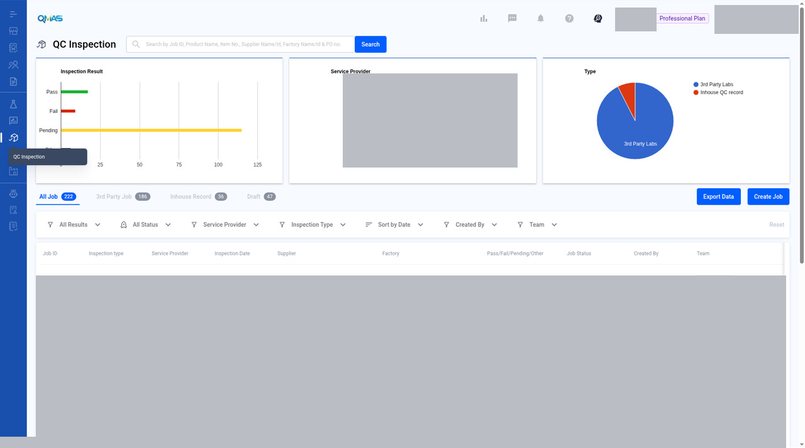
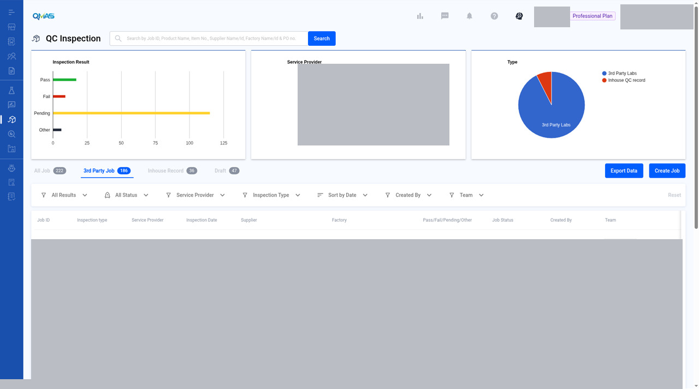
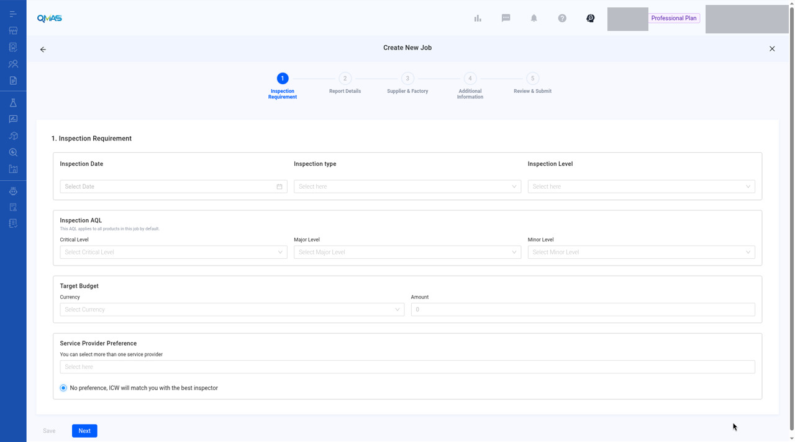

QC Inspection — Get a QC Inspection Quote via ICW
Ask ICW to quote and arrange a third-party QC inspection for your products.
Screenshot slots: 5 reviewed and 7 pending privacy review.
Overview
- Open QC Inspection, click Create Job, choose Get QC inspection quote via ICW and click Continue.
- Inspection Requirement: date, type, level, AQL, budget and provider preference.
- Report Details: products and POs to inspect.
- Supplier & Factory: who makes the goods and where the inspection takes place.
- Additional Information: files and remarks.
- Review & Submit: check everything and click Submit.
Step-by-step
1. Open QC Inspection
In the left menu, open QC Inspection. The charts show inspection results, service providers and job types. Tabs list All Job, 3rd Party Job, Inhouse Record and Draft. Click Create Job.



2. Choose what you are looking for
| Option | Use it when |
|---|---|
| Get QC inspection quote via ICW | You want ICW to arrange a third-party inspector. This guide. |
| Start internal inspection | Your own QC team will inspect. See the Internal QC Inspection guide. |
| Add inspection record | The inspection is already done and you want to record the result. |
Choose Get QC inspection quote via ICW and click Continue.

3. Inspection Requirement
- Inspection Date.
- Inspection type: Final Random, Loading, During Production, Re-Inspection, Initial Production, Fabric, 100% or Vendor Own Inspection.
- Inspection Level: General Inspection Level I–III or Special Level S-1 to S-4.
- Inspection AQL: Critical, Major and Minor levels. They apply to all products in this job by default.
- Target Budget (currency and amount) and Service Provider Preference. Leave “No preference, ICW will match you with the best inspector” selected if you have no preferred provider.
The reviewed screenshot of this step is the blank form. It includes Target Budget and Service Provider Preference. It is not a filled or submitted job. The filled step-1 screenshot is still pending.

Image pending privacy review
File name: 04-step1-filled.jpg
Reviewed replacement image not available yet. Follow the written steps above.
4. Report Details
Click Add Product, search for the product, click Select, then Confirm.
Image pending privacy review
File name: 05-select-product.jpg
Reviewed replacement image not available yet. Follow the written steps above.
For each product, fill in the PO details: customer name, customer PO #, PO #, order quantity and number of cartons. Use Add New PO for more POs, Add Product for more products, and Add Report or Duplicate Report if you need separate reports. Tick Signed Sample Available if there is one. Click Next.
Image pending privacy review
File name: 06-step2-report.jpg
Reviewed replacement image not available yet. Follow the written steps above.
5. Supplier & Factory
Click Add Supplier and select the supplier. Then click Select Existing Factory and choose the factory where the inspection will take place. Check the contact person, phone and email for each. Click Next.
Image pending privacy review
File name: 07-step3-supplier-factory.jpg
Reviewed replacement image not available yet. Follow the written steps above.
6. Additional Information
Upload reference files such as tech packs or previous reports, and write any special requirement in Remark. Click Next.
Image pending privacy review
File name: 08-step4-additional.jpg
Reviewed replacement image not available yet. Follow the written steps above.
7. Review & Submit
Check the summary. Click Edit on any section to change it. Click Submit.
Image pending privacy review
File name: 09-step5-review.jpg
Reviewed replacement image not available yet. Follow the written steps above.
8. Done — job detail
QMAS shows “Create job successfully!” and opens the job. It has a Job ID and starts as Under Review. The Quotes, Reports, Attachments and Invoices tabs follow the job.
Image pending privacy review
File name: 10-job-detail.jpg
Reviewed replacement image not available yet. Follow the written steps above.
Tips
FAQ
- How do I book a third-party QC inspection?
- Go to QC Inspection (https://qmas.icw.io/inspection), click Create Job, choose Get QC inspection quote via ICW, then complete the 5 steps and Submit.
- What is the difference between a QC inspection quote and an internal inspection?
- A quote via ICW uses a third-party inspector arranged by ICW. An internal inspection is done by your own QC team (Internal QC Inspection).
- Can I save a QC job and finish it later?
- Yes. Click Save on any step. The job is kept on the Draft tab.
Help Center additions and remaining gaps
Source-documented — create path (Help Center updated 2026-11-04)
Source: How To Request Quotation For QC Inspection From Global Laboratories, https://app.notion.com/p/bf607ad093d24e3c8d483dd85d9a474e. Direct link cited there: https://qmas.icw.io/inspection/jobs/new.
The November 2026 create steps already match this page. The Help Center also says: choose Get QC inspection quote via ICW and click Continue; choose Start internal inspection if your own QC team will inspect; or Add inspection record to record a finished inspection. The Internal QC page covers starting an internal inspection. Add inspection record still has no guide.
The November 2026 steps also say: click Save on any step to finish later. Drafts are on the Draft tab.
Source-documented — post-submit flow (older wording; needs verification)
- After submission, the list status is Under Review.
- When the quotation is ready, the status changes to Quote Available.
- Click View detail next to Status.
- Scroll to the QUOTES tab.
- Choose a quotation and click SELECT to confirm the order.
- Status becomes Waiting for reserved booking, then Booking Reserved when the booking is confirmed.
- After the inspection is completed, the Help Center says you will receive the inspection report and the status will be Completed.
Remaining gaps
- The full Add inspection record flow.
- Job-detail tabs Quotes, Reports, Attachments, and Invoices are named. One overview shot exists.
- All Job, 3rd Party, and Inhouse Record tabs, and more detail on the Draft tab.
- List filters, Export, and the row toolbar.
- Filed wording bugs (“Add New Po”, “XLSL”, level labels, empty product picker until search). Confirm the live UI. Do not invent fixes.
Help Center reconciliation 2026-11-13 (HKT). Original Help Center not edited. This draft is not the public guide at the marconip2026 site. No Dify upload.